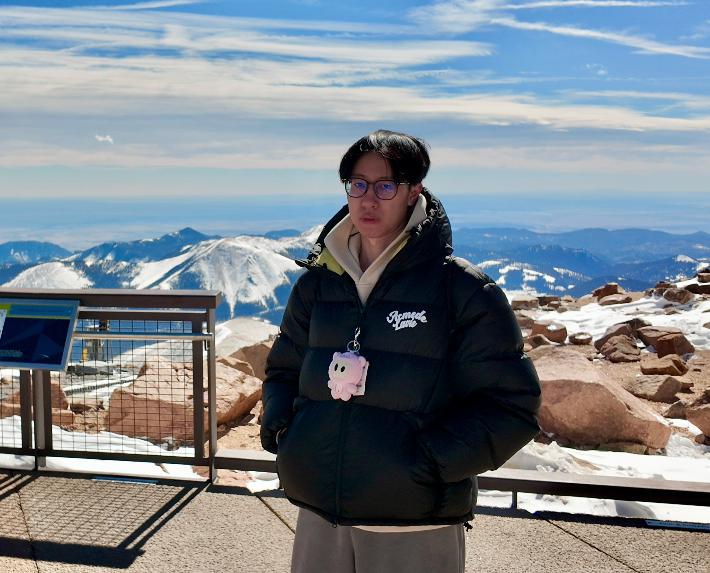

Qiuyuan Chen
Travel & Landscape Photographer
I travel with a camera to find the places where light and stillness converge. From the highland meadows of Xinjiang to the canyon streets of New York, I look for the quiet moment before and after — the pause that most people walk past. These photographs are my attempt to stay a little longer.